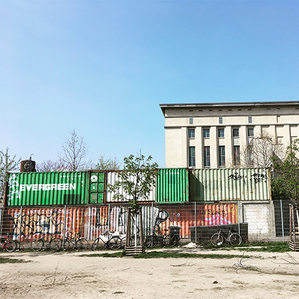
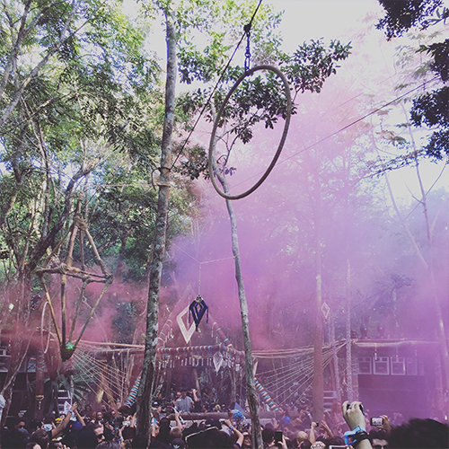

|  |
BERGHAIN, BERLIN - EVERY WEEKS
Sitting in a dusty lot on the border of Kreuzberg and Friedrichshain, Berghain is widely considered one of the world's best nightclubs. It has three dance floors: Berghain, a dark main room where most DJs play techno, Panorama Bar, an upstairs space that's more focused on house, and the Säule on ground floor, though the music policy in all rooms is very open-ended.
|
|
DEKMANTEL, AMSTERDAM - AUGUST
When searching for new music, they often find treasures in places they’d never heard of before. They connect with and listen to artists that are completely new to everybody. Unexpected turns can lead to sheer excitement. They believe that music can be visionary and inspiring, rebellious and radical but above all, they believe that music can be an adventure.
|
|  |
DAY ZERO, TULUM, JANUARY
A convergence of mysticism, music, natural wonder and apocalyptic sentiment spawned Day Zero on the final day of the Ancient Mayan Calendar in 2012. In its subsequent four chapters, it has evolved, awakening a community of curious thrill seekers and adventurers from all four corners of the globe, pulled to the Mayan jungles surrounding Tulum to celebrate the magic of one of the world’s singular events, soundtracked by some of its most exciting artists.
|